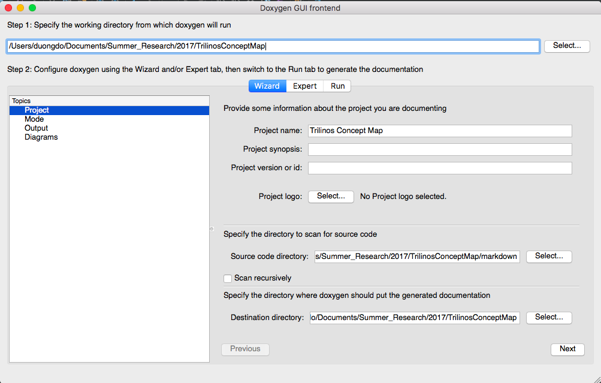

Below are some tutorials on creating concept map by Doxygen. This tutorial can apply to
Trilinos Concept Map and
Better Scientific Concept Map.
Required repos and files
There are two required files index.html and readme.md.
All the contents will be located in markdown folder. It often contains
.md file and .dot file. Download two example files:
categories.md and categories.dot.
We recommend you to write the script to auto-generate the .dot file because the .dot file
is often too long to write manually.
Generating files on Doxygen
- Download Doxygen and open it.
- Choose appropriate project title and directories.
Source code directory will be the markdown folder and destination directory will be the main directory.
Then click Next.

- Choose mode as the image below. Click Next.
- Choose output as the image below. Click Next.
- Choose diagram as the image below. Click Expert.
- Click on Dot in the left navigation bar and choose Dot File directories is the markdown folder.
- Cilck Run, then click Run doxygen.
- Click on Show HTML output to check result locally.
- If the result is not correct, check the content inside markdown folder and rerun the above steps.
Contact
- If you have any question about the above process,
contact Duong Do for explanation.
- We also welcome for any recommendation for our project.
Contact at the same address